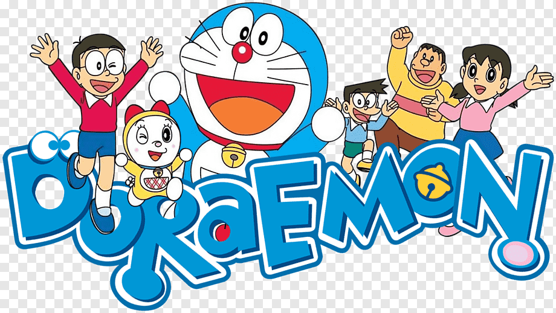
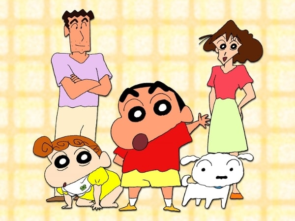

Cartoon
A cartoon is a type of visual art that is typically drawn, frequently animated, in an unrealistic or semi-realistic style. The specific meaning has evolved over time, but the modern usage usually refers to either: an image or series of images intended for satire, caricature, or humor; or a motion picture that relies on a sequence of illustrations for its animation. Someone who creates cartoons in the first sense is called a cartoonist,[1] and in the second sense they are usually called an animator.
The concept originated in the Middle Ages, and first described a preparatory drawing for a piece of art, such as a painting, fresco, tapestry, or stained glass window. In the 19th century, beginning in Punch magazine in 1843, cartoon came to refer – ironically at first – to humorous artworks in magazines and newspapers. Then it also was used for political cartoons and comic strips. When the medium developed, in the early 20th century, it began to refer to animated films which resembled print cartoons.[2]A cartoon (from Italian: cartone and Dutch: karton—words describing strong, heavy paper or pasteboard) is a full-size drawing made on sturdy paper as a design or modello for a painting, stained glass, or tapestry. Cartoons were typically used in the production of frescoes, to accurately link the component parts of the composition when painted on damp plaster over a series of days (giornate).[3] In media such as stained tapestry or stained glass, the cartoon was handed over by the artist to the skilled craftsmen who produced the final work.
Such cartoons often have pinpricks along the outlines of the design so that a bag of soot patted or "pounced" over a cartoon, held against the wall, would leave black dots on the plaster ("pouncing"). Cartoons by painters, such as the Raphael Cartoons in London, and examples by Leonardo da Vinci, are highly prized in their own right. Tapestry cartoons, usually colored, were followed with the eye by the weavers on the loom.[2][4]
Doraemon
Doraemon (Japanese: ドラえもん [doɾaemoɴ]) is a Japanese manga series written and illustrated by Fujiko F. Fujio. The manga was first serialized in December 1969, with its 1,345 individual chapters compiled into 45 tankōbon volumes and published by Shogakukan from 1970 to 1996. The story revolves around an earless robotic cat named Doraemon, who travels back in time from the 22nd century to aid a boy named Nobita Nobi.
The manga spawned a media franchise. Three anime TV series have been adapted in 1973, 1979, and 2005. Additionally, Shin-Ei Animation has produced over forty animated films, including two 3D computer animated films, all of which are distributed by Toho. Various types of merchandise and media have been developed, including soundtrack albums, video games, and musicals. The manga series was licensed for an English language release in North America, via Amazon Kindle, by a collaboration of Fujiko F. Fujio Pro with Voyager Japan and AltJapan Co., Ltd. The anime series was licensed by Disney for an English-language release in North America in 2014, and LUK International in Europe, the Middle East and Africa.
Doraemon was well-received by critics and became a hit in many Asian countries. It won numerous awards, including the Japan Cartoonists Association Award in 1973 and 1994, the Shogakukan Manga Award for children's manga in 1982, and the Tezuka Osamu Cultural Prize in 1997. As of 2019, it has sold over 250 million copies worldwide, becoming one of the best-selling manga series in history. Doraemon is also one of the highest-grossing media franchises of all time, of which the animated film series has the highest number of admissions in Japan. The Doraemon character has been viewed as a Japanese cultural icon, and was appointed as the first "anime ambassador" in 2008 by the country's Foreign Ministry.Nobita Nobi is a ten-year-old Japanese school boy, who is kind-hearted and honest, but also lazy, unlucky, weak, gets bad grades and is bad at sports. One day, a robot cat from the 22nd century named Doraemon is sent back to the past by Nobita's descendants to take care of Nobita so that his descendants can have a better life. Doraemon has a four-dimensional pouch in which he stores tools, inventions, and gadgets from the future to aid Nobita whenever he is faced with a problem. Although Doraemon is a cat robot, he has a fear of mice because of an incident where robotic mice chewed off his ears. This is why Doraemon lost his original yellow color and turned blue, from sadness.
Nobita has three main friends: Takeshi Goda (nicknamed Gian), Suneo Honekawa (Gian's sidekick), and Shizuka Minamoto, Nobita's best friend and love-interest. Gian is a strong, leading and domineering boy, but also loyal to his friends. Suneo is a wealthy and spoiled boy who uses his friendship with Gian to win the respect of other schoolmates. Shizuka is a gentle and kind girl who frequently plays with Nobita. Nobita has a crush on Shizuka; she is his prospective future wife (Nobita's future wife is initially Gian's younger sister). Although Gian and Suneo

Shinchan
Crayon Shin-chan (Japanese: クレヨンしんちゃん, Hepburn: Kureyon Shin-chan), is a Japanese manga series written and illustrated by Yoshito Usui. Crayon Shin-chan made its first appearance in 1990 in a Japanese weekly magazine called Weekly Manga Action, which was published by Futabasha. Due to the death of author Yoshito Usui, the manga in its original form ended on September 11, 2009. A new manga began in the summer of 2010 by members of Usui's team,[5] titled New Crayon Shin-chan (新クレヨンしんちゃん, Shin Kureyon Shin-chan).
Celebrating its 30th consecutive year on air in 2022, an animated television adaptation began airing on TV Asahi in 1992 and is still ongoing on several television networks worldwide and has over 1000 episodes. The show has been dubbed in 30 languages which aired in 45 countries.[6]An anime adaptation of Crayon Shin-chan, produced by Shin-Ei Animation, has aired in Japan on TV Asahi since April 13, 1992. The series was originally directed by Mitsuru Hongo from 1992 to 1996, and was replaced by Keiichi Hara from 1996 to 2004. Since 2004, the series is directed by Yuji Muto. The music in the series is composed by Toshiyuki Arakawa. The series was originally going to end in 1994 and have its time-slot replaced by a remake of Umeboshi Denka. However, because the series was a huge hit on TV Asahi, the network decided not to replace it.[16]
An English subtitled version of Crayon Shin-chan ran on KIKU in Hawaii from December 18, 1993, until December 2001[17] when Vitello Productions acquired the rights. The episodes were translated by Karlton Tomomitsu.[18]The series was first dubbed into English by Vitello Productions in Burbank, California through 2001–2002, when TV Asahi and Lacey Entertainment decided to market the series worldwide. During the early 2000s, it ran on Fox Kids (and later Jetix) in the United Kingdom, on Fox Kids in Australia, on Channel i in Singapore and on RTÉ Two in the Republic of Ireland. Subtitled versions also aired on Stöd 2 in Iceland and on Arutz HaYeladim in Israel. RTÉ Two has not shown the series since 2005, and on Jetix UK, the series was eventually relegated to shorts in-between programs, as a slot-filler. The dub is of American origin, with veteran voice actors such as Kath Soucie, Russi Taylor, Grey DeLisle, Pat Fraley, Eric Loomis and Anndi McAfee playing the characters. Soucie voiced Shin and Misae.[30]
In 2003, Phuuz entertainment inc. was commissioned by Lacey Entertainment to continue in similar style as the Vitello dub. But their episodes featured a new cast of voice artists (among others Diane Michelle, Julie Maddalena, Peter Doyle).
52 episodes have been produced of the Vitello dub and 52 episodes of the Phuuz dub. Vitello and Phuuz episodes lasted on an average 21 minutes and contained three segments of 5 to 7 minutes. Some of the dubs of the series used the Vitello dub as the source for the dubbing. Some dubs also dubbed the Phuuz dub afterwards.
Funimation acquired the Shin-chan North America license in 2006.[31] As per all international licenses for the series, TV Asahi remained a licensing partner for North America.
Funimation's version features a Texas-based cast of voice actors. Funimation's dub takes many liberties with the source material and was heavily Americanized. Similar to the Vitello dub, episodes of the series were dubbed out of their original order, and segments were reordered. Additionally, many characters had their names changed to American-sounding ones. Many sexual references, dark humor, and references to current popular American culture were added. For example, in one scene, Ai and Penny argue over which one of them is Jessica Simpson (whose first album was not released until 1999) and which one is Ashlee Simpson (whose first album was not released until 2004), which is very different from the original Japanese script that dealt with many social issues within Japan at the time. At least two episodes reference Rudy Giuliani and his unsuccessful bid for president.
New, previously non-existent backstories were created, as well as significantly different personalities for the characters. For instance, the unseen father of Nene (known in the dub as "Penny") was suggested to be physically abusive toward both his wife and daughter, and this was used as a source of black humor. Principal Enchou was rewritten as a half-Peruvian, half-Romani man with a complicated prior life that includes a stint as a magician, in which he accidentally injured scores of audience members. Ageo-sensei (
